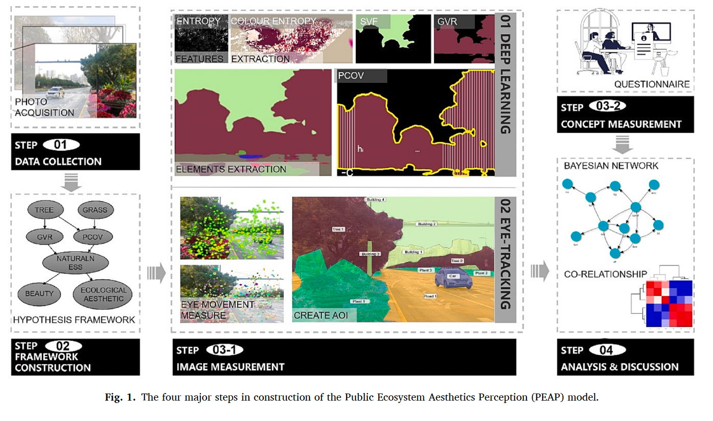
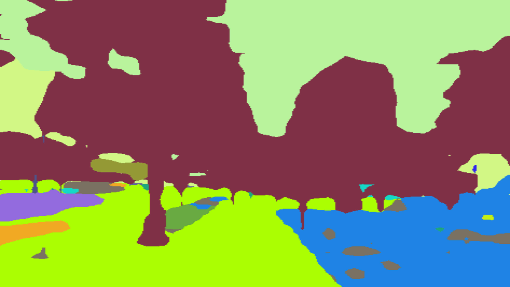
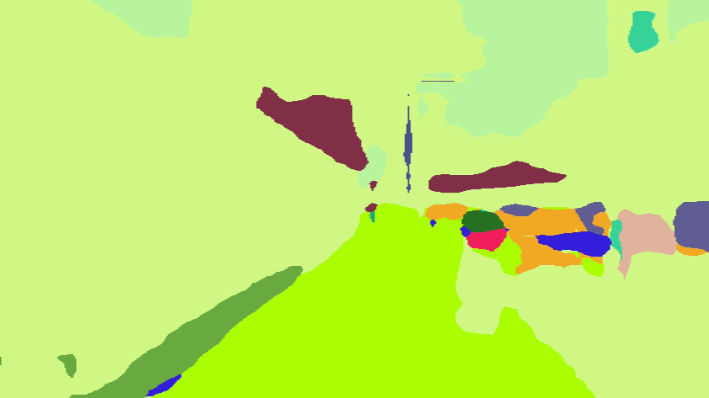
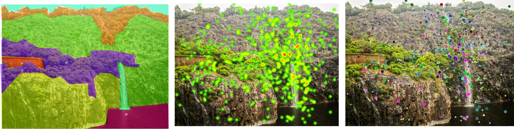

Landscape perception: eye-tracking and deep learning
Master’s research at Shanghai Jiao Tong University, where I was already pairing data driven methods with ecological questions. The study builds a Public Ecosystem Aesthetics Perception model, which reads a street scene from its physical elements through to whether people like it.
Why measure aesthetics at all
Ecologically richer planting is often read by the public as untidy, so schemes that are good for biodiversity get replaced with ones that are merely neat. If we want ecological quality to survive maintenance and politics, we need to know which visual properties carry public approval, and which ones do not.
The study treats perception as several stages rather than one judgement. Physical elements in a scene, such as trees, grass, earth, and walls, become measurable landscape features. Those features feed perceptual concepts such as naturalness, complexity, contrast, and imageability. Those concepts, together with where the eye actually goes, produce a like or dislike.


Reading the scene with a neural network
A convolutional neural network segments every scene into its elements, so composition is measured rather than estimated by eye. From the segmentation I derive the landscape features the model needs, including green view ratio, plant coverage, sky view factor, and colour and visual entropy.


Where people actually look
Eye-tracking records fixations, saccades, and gaze paths while participants view each scene, and areas of interest are drawn on the segmented elements so attention can be attributed to what was being looked at. Semi-structured interviews and questionnaires then capture the perceptual concepts participants report.

A Bayesian network from elements to liking
A Bayesian network learns the dependencies between what is in the scene, how it is perceived, and whether it is liked. Naturalness carries most of the positive signal, and it is reached through complexity and contrast rather than directly. Walls and hard boundaries act against liking, while exposed earth reads as neglect in some scenes and as legible structure in others.
What it means for design
Naturalness is not read from the amount of green alone. It is built from structure people can see, layered planting, visible depth, and contrast between elements, which means an ecologically richer scheme can also be the better liked one if its structure is legible. The same measurement chain, from segmentation to perceptual concept to preference, is what I later carried into the biodiversity work, where the outcome is bird communities rather than public approval.